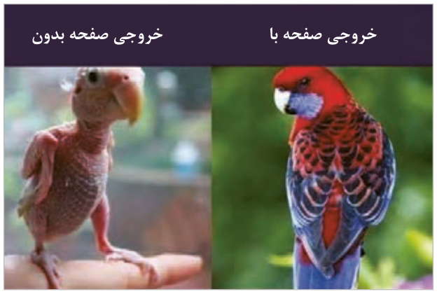

چگونه میتوان رنگ متن و زمینه عناصر صفحه وب را مشخص نمود؟
چگونه میتوان چیدمان عناصر صفحه را با فواصل مناسب انجام داد؟
آیا میتوان بدون تغییر در ساختار HTML، ظاهر یک سایت را دگرگون نمود؟
چگونه میتوان چیدمان و استایل عناصر صفحه را در دستگاههای مختلف تغییر داد؟
جذابیت بصری صفحه وب چه تأثیری روی تجربه کاربری دارد؟
در پایان از هنرجو انتظار میرود
شیوههای مختلف تعریف CSS و اولویت اجرای آنها را بداند.
توانایی تنظیم استایل عناصر متنی شامل نوع قلم، اندازه، رنگ، وزن و تراز آنها را داشته باشد.
توانایی تنظیم ویژگیهای ظاهری عناصر شامل رنگ، پسزمینه، شفافیت، خط دور و سایه را داشته باشد.
انواع انتخابگرهای ساده، ترکیبی، شبهکلاس و ویژگی را بشناسد و از آنها برای انتخاب دقیق عناصر بهشکل بهینه استفاده نماید.
با مفهوم مدل جعبهای آشنا باشد و توانایی تنظیم فواصل داخلی (margin) و خارجی (padding) عناصر را داشته باشد.
کاربرد ویژگی Display را بداند و از آن برای کنترل نحوه نمایش عناصر استفاده نماید.
توانایی چیدمان واکنشگرای عناصر صفحه را توسط قابلیتهای Flex و Grid داشته باشد.
کدهای CSS را به شکل خوانا و با رعایت تورفتگی بهکار ببرد و برای هر یک از استایلهای صفحه از کامنتهای مناسب و قابل درک استفاده نماید.
استاندارد عملکرد
با استفاده از قابلیتهای CSS، ظاهر و چیدمان عناصر صفحه وب را مطابق با اصول و استانداردهای نوین طراحی وب، پیادهسازی و تنظیم نماید.
صفحه ۱۱۷
زیباسازی صفحه با CSS
در واحدکار قبل نحوه طراحی ساختار صفحات وب با استفاده از برچسبهای HTML آموزش داده شد. صفحاتی که صرفاً توسط HTML ایجاد شده باشند، دارای متون ساده، پس زمینه سفید، فواصل و چیدمان پیشفرض میباشند و در نتیجه فاقد جذابیت بصری هستند. برای ایجاد ظاهری زیبا و کاربرپسند استفاده از CSS جهت استایلدهی به عناصر ضروری است. این ابزار به توسعهدهندگان وب امکان میدهد که ظاهر و چیدمان عناصر صفحه را به سادگی و با انعطاف بالا مدیریت کنند.
CSS مخفف عبارت Cascading Style Sheets و زبانی برای استایلدهی و کنترل ظاهر صفحات وب است. این زبان به توسعهدهندگان وب امکان میدهد که ظاهر و چیدمان عناصر را کاملاً جدا از ساختار اصلی صفحه مدیریت کنند. این موضوع باعث آسانتر شدن نگهداری و بهروزرسانی سایت میشود. با استفاده از CSS میتوان استایلهای متنوعی را برای عناصر مختلف وبسایت تنظیم نمود؛ مانند تعیین رنگ متن و زمینه عناصر، ایجاد سایه، خط دور، تغییرات ظاهری در هنگام قرارگیری ماوس روی عناصر و ...

شکل ۲۲
ساختار CSS
CSS بهشکل مجموعهای از قوانین است که توسط انتخابگرها (selectors) و ویژگیها (properties) ایجاد میشوند. هر قانون معمولاً به صورت زیر نوشته میشود:
selector {
property: value;
}
عبارت Selector به معنای انتخابگر است و برای انتخاب عناصر صفحه استفاده میشود. به عنوان مثال برای تعیین استایل عناصر پاراگراف، از انتخابگر p و برای انتخاب همه عناصر صفحه از علامت * استفاده میشود. عبارت Property به ویژگیهای قابل مقداردهی در CSS گفته میشود، مانند color، font-size و border. عبارت Value به مقدار ویژگی عنصر اشاره دارد.
صفحه ۱۱۸
نحوه بهکارگیری CSS در صفحات
برای ایجاد و بهکارگیری استایلهای سفارشی روی عناصر صفحه از سه روش به شرح زیر استفاده میشود:
CSS درون خطی(Inline): استایل عناصر درون تگهای HTML نوشته میشود.
CSS داخلی (Internal):
استایل عناصر درون تگ <style> در بخش <head> نوشته میشود.
در سبک درون خطی در صورتیکه تعداد ویژگیهای اختصاص داده شده به عنصر زیاد باشد، کد عنصر شلوغ و ناخوانا میشود. بنابراین از CSS داخلی یا خارجی برای مدیریت بهتر استایلها استفاده میشود.
CSS خارجی (External):
در روش CSS خارجی، استایل عناصر، درون فایلی با پسوند CSS قرار میگیرد. محتوای این فایل نیازی به تگ <style> ندارد و صرفاً سبک عناصر درون آن تعیین میشود. فایل CSS باید توسط تگ <link> به صفحه وب الحاق شود تا قوانین این فایل روی عناصر صفحه وب اعمال شود. الحاق فایل CSS به فایل HTML در بخش <head> انجام میشود:
استفاده از فایلهای CSS خارجی، بهترین روش استایلدهی در پروژههای متوسط و بزرگ است. مهمترین مزایای روش خارجی عبارتاند از:
فایل CSS قابلیت استفاده مجدد دارد، یعنی میتواند به صفحات مختلف سایت الحاق شود.
با جدا شدن کدهای CSS و HTML، نگهداری، بهروزرسانی واشکالزدایی (Debug) استایل و کدهای HTML آسانتر میشود.
مرورگرها میتوانند فایلهای CSS خارجی را در حافظه پنهان (cache) خود ذخیره کنند، این موضوع به بارگذاری سریعتر صفحات در دفعات بعدی ورود به سایت کمک میکند.
عیب این روش این است که فایل CSS باید بهصورت مجزا بارگذاری شود و این کار ممکن است سرعت بارگذاری سبک عناصر صفحه وب را در اولین بارگذاری پایین بیاورد.
برای تمرینهای کوچک در حد سبکدهی به یک عنصر میتوان از CSS خطی استفاده نمود. سبک داخلی برای پروژههای کوچک و سبک خارجی برای پروژههای متوسط، بزرگ و پیچیده مناسب است.
اولویت اعمال انواع استایلها
چنانچه سبکهای مختلفی برای یک عنصر نوشته شده باشد، اولویت اعمال سبکها به ترتیب درون خطی، داخلی و خارجی خواهد بود. اگر عنصری دارای هیچ یک از این سبکها نباشد، از سبک عنصر والد خود استفاده میکند.
صفحه ۱۲۰
توضیحات (Comment) در CSS
برای افزودن توضیحات در CSS به صورت تکخطی یا چندخطی از علائم /* */ از شکل ۲۳ استفاده میشود.
/* this is a comment */
شکل ۲۳
نحوه قالببندی متن در CSS
CSS دارای مجموعهای از ویژگیها برای قالببندی متون است. این ویژگیها امکان تعیین فونت، اندازه فونت، ارتفاع خطوط، تزئینات متن و ... را فراهم میکنند. ویژگیهای عناصر متنی به شرح زیر است:
font-family و font-size: تعیین نوع و اندازه فونت
text-align: تعیین تراز متن شامل مقادیر left، right، center و justify
text-shadow: ایجاد سایه با رنگ و اندازه دلخواه. ساختار کلی این ویژگی به شکل زیر است:
text-shadow: offset-x offset-y blur-radius color;
شکل ۲۴
مقادیر این ویژگی به ترتیب مقدار جابهجایی افقی و عمودی سایه، میزان محو شدگی و رنگ سایه است.
text-transform: تغییر شکل حروف به صورت بزرگ، کوچک و... شامل مقادیر uppercase، lowercase، capitalize، none و …
direction: تعیین جهت نمایش متن، شامل مقادیر ltr و rtl برای چپ به راست و راست به چپ
line-height: تعیین فاصلۀ عمودی بین خطوط متنی. این ویژگی فاصلۀ عمودی خط متن را تعیین میکند. مقدار این ویژگی شامل ارتفاع حروف بهعلاوه فضای خالی قبل و بعد آنهاست. شامل ارتفاع حروف (فونت) بهاضافه فضای خالی قبل و بعد از آنهاست.
text-decoration: تعیین تزیینات متن، شامل مقادیر none، underline، overline، line-through. ویژگی text-decoration با مقدار none موجب حذف زیرخط لینک میشود.
vertical-align: تراز متن در راستای عمودی، شامل مقادیر top، bottom، baseline و...
Page 116
Learning unit 2
Have you ever thought about this
How can you set the text color and background color of web page elements?
How can you lay out page elements with suitable spacing?
Can you transform the look of a site without changing its HTML structure?
How can you change the layout and style of page elements on different devices?
How does the visual appeal of a web page affect the user experience?
By the end, the student is expected to
Know the different ways of writing CSS and their order of priority.
Be able to style text elements, including their font, size, color, weight, and alignment.
Be able to set the visual properties of elements, including color, background, opacity, border, and shadow.
Know the kinds of selectors (simple, combinator, pseudo-class, and attribute) and use them to select elements precisely and efficiently.
Understand the box model and be able to set the outer (margin) and inner (padding) spacing of elements.
Know what the Display property does and use it to control how elements are shown.
Be able to lay out page elements responsively with Flex and Grid.
Write CSS code readably with proper indentation, and use suitable, understandable comments for each of the page's styles.
Performance standard
Using CSS, build and adjust the look and layout of web page elements according to the principles and standards of modern web design.
Page 117
Styling a page with CSS
The previous unit showed how to design the structure of web pages with HTML tags. Pages built only with HTML have plain text, a white background, and default spacing and layout, so they have no visual appeal. To give a page an attractive, user-friendly look, CSS is needed to style its elements. CSS lets web developers manage the look and layout of page elements simply and flexibly.
CSS stands for Cascading Style Sheets; it is a language for styling and controlling the look of web pages. It lets web developers manage the look and layout of elements completely separately from the main structure of the page, which makes the site easier to maintain and update. With CSS you can set all kinds of styles for the elements of a website, such as text and background colors, shadows, borders, changes when the mouse is over an element, and so on.
Figure 22
The structure of CSS
CSS is a set of rules made of selectors (selectors) and properties (properties). Each rule is usually written like this:
selector {
property: value;
}
The Selector selects elements of the page. For example, to style paragraph elements the selector p is used, and to select all elements of the page the * sign is used. A Property is something that can be given a value in CSS, such as color, font-size, and border. The Value is the value of the element's property.
Page 118
How to apply CSS to pages
There are three ways to create custom styles and apply them to page elements:
CSS درون خطی(Inline): استایل عناصر درون تگهای HTML نوشته میشود.
CSS داخلی (Internal):
The styles are written inside the <style> tag in the <head> part.
With inline styles, if an element is given many properties, its code becomes cluttered and hard to read. So internal or external CSS is used to manage styles better.
CSS خارجی (External):
With external CSS, the styles are put in a file with the CSS extension. This file needs no <style> tag; it only sets the styles of elements. The CSS file must be linked to the web page with the <link> tag so that its rules apply to the page's elements. The CSS file is linked to the HTML file in the <head> part:
External CSS files are the best way to style medium and large projects. The main advantages of the external method are:
The CSS file is reusable; it can be linked to different pages of the site.
With CSS and HTML code separated, maintaining, updating, and debugging (Debug) the styles and the HTML code become easier.
Browsers can store external CSS files in their cache (cache), which helps pages load faster on later visits to the site.
The drawback of this method is that the CSS file must be loaded separately, which can slow down how quickly the page's styles load the first time.
For small exercises, such as styling a single element, you can use inline CSS. Internal styles suit small projects, and external styles suit medium, large, and complex projects.
The priority of the kinds of styles
If different styles are written for one element, the order of priority is inline, then internal, then external. If an element has none of these styles, it uses the style of its parent element.
Page 120
Comments (Comment) in CSS
To add single-line or multi-line comments in CSS, the /* */ marks are used, as in Figure 23.
/* this is a comment */
Figure 23
Formatting text with CSS
CSS has a set of properties for formatting text. They let you set the font, font size, line height, text decoration, and so on. The properties of text elements are:
font-family and font-size: set the font and its size
text-align: sets the text alignment, with the values left, right, center, and justify
text-shadow: creates a shadow with any color and size. The general form of this property is:
text-shadow: offset-x offset-y blur-radius color;
Figure 24
Its values are, in order, the horizontal and vertical offset of the shadow, the amount of blur, and the color of the shadow.
text-transform: تغییر شکل حروف به صورت بزرگ، کوچک و... شامل مقادیر uppercase، lowercase، capitalize، none و …
direction: sets the direction of the text, with the values ltr and rtl for left-to-right and right-to-left
line-height: sets the vertical distance between lines of text. Its value includes the height of the letters (the font) plus the empty space above and below them.
text-decoration: sets text decoration, with the values none, underline, overline, and line-through. text-decoration with the value none removes the underline of a link.
vertical-align: vertical alignment of text, with the values top, bottom, baseline, and so on